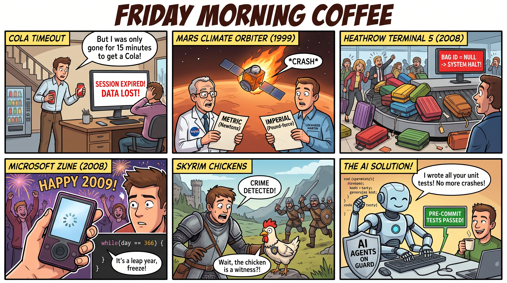

Unit Tests, Cola and Chickens: A Friday Morning Coffee ☕
Grab your coffee, mute the notifications for a few minutes, and let's talk about the elephant in the room before the weekend.

The elephant in the room: unit tests
We all know the daily reality. Deadlines are tight, features need to ship, and writing unit tests is the first thing that gets skipped. Nobody decides to skip them. They simply lose every argument with the next ticket in the queue, and so they quietly disappear. The result is a classic piece of technical debt that grows in the background until one day it shows up in a bug report with a very confused subject line. Like everything else, extremes are bad. Too many tests can slow down delivery and make every change feel heavy. No tests at all is playing with fire.
Last time we looked at another weak spot, documentation, and we are slowly straightening that out too. Now let's go one step further and ask a practical question: what happens when a system has no safety nets? The honest answer is that nothing happens for a long time, and then everything happens at once, usually on a Friday afternoon, usually with a customer on the phone.
Sometimes the cause of a bug is so non-obvious, so unlikely, and seemingly so unrelated to the system that the whole team stares at the monitor and scratches their heads. Below are five stories of the kind that circulate in the software industry, where a missing test turned a small mistake into a very expensive one, or at least a very funny one. Each one comes with a little picture of how it could have unfolded in an ordinary office, because a bug is always easier to remember when you can imagine it happening to your own desk.
Five stories, five missing tests
1. The session that expired on the way to a Cola
Picture a perfectly ordinary Friday morning. The coffee machine is working, the first meeting has not started yet, and somewhere between the second cup and the third, a colleague sits down to fill in a long internal form. They type carefully, check every field, and feel rather proud of their own thoroughness. Then, halfway through the form, the stomach makes its opinion known and they decide a Cola is required. The vending machine is at the bottom of the building, so they set off on the long walk down the stairs, fully expecting the form to still be there when they come back. It is not. The screen greets them with a cheerful message that the session has expired, and every single field has been wiped clean. The colleague stares at the empty form, then at the Cola, then back at the form, and quietly starts the whole thing again. Somewhere in the back of the room, a developer hears the story and realises that the application has a hidden idle timeout of exactly fifteen minutes, and that nobody ever wrote a test for what happens to unsaved input when it fires. Support tickets like this one tend to sound like jokes at first, but the investigation usually ends with something very mundane and very easy to test. In this version of the story, the coffee machine is two minutes away and the vending machine is a fifteen-minute round trip, which is exactly long enough to break the form.
What would have caught it: a unit test on the session state object that checks what happens to unsaved input after the idle timeout, and confirms that validation and a warning run before any reset.
2. Mars Climate Orbiter (1999): the unit mix-up
Imagine a team meeting where everyone is excited about a spacecraft that has been travelling for months. A slide shows the navigation plan, a second slide shows the thruster data, and a third slide, which nobody reads very carefully, shows the units. One group of engineers has written their thruster figures in pound-force seconds, which is perfectly reasonable on their side of the building. Another group expects newton-seconds, which is perfectly reasonable on theirs. Nobody puts the two sets of numbers next to each other, because they look like numbers and numbers look fine. The spacecraft, worth about 327 million dollars, slowly drifts toward a path it was never meant to take. By the time someone notices, the orbiter is far too close to Mars and is lost in the atmosphere. NASA's mishap investigation identified the unit mismatch between the two systems as the root cause. It is a sobering reminder that a value without a unit is just a rumour, and that the cheapest moment to check it is in a test, long before anyone is watching a telemetry screen.
What would have caught it: a simple unit test on the interface between the two modules. Feed in a known value and assert the unit and the converted result. A couple of lines of test code could have saved a spacecraft.
3. Heathrow Terminal 5 (2008): the baggage that was not there
Picture the opening day of a brand new terminal. Everyone involved has been looking forward to it for years, the ribbon has been cut, and the first passengers are walking in with their suitcases and their expectations. Behind the scenes, a baggage handling system is doing its very best to keep up. Most of the bags behave, but some arrive with identifiers the system has never seen before, and the code responsible for those cases was written on the optimistic assumption that such bags would never turn up. Somewhere in the control room, a supervisor watches the screens fill with unexpected states, and the conveyor belts begin to behave like a very confused queue at a Friday coffee break, everybody going in circles and nobody quite sure where they are supposed to be. Over the following days, tens of thousands of bags were misrouted or lost, and the airport's operations were badly disrupted for more than a week. Public accounts describe a system that could not handle missing or unexpected identifiers under real load, and the consequences spread through the whole operation. The original designers were not careless; the cases simply did not appear in anyone's test plan.
What would have caught it: edge-case tests for missing and malformed identifiers, for example what the code does when the ID is null or has an unknown format. Combine those with load tests, because a bug that is harmless at ten items per minute can be a disaster at a thousand.
4. The Zune and the leap day (31 December 2008)
Picture a New Year's Eve party with plenty of noise, fireworks on the screen and a group of friends counting down to the new year. One of them pulls out a Zune 30, the music player that was supposed to be the cool alternative to the more famous device, and holds it up proudly to show the playlist. Then the screen freezes on a little spinning icon and refuses to move. Across the world, thousands of other players are doing exactly the same thing at exactly the same moment, stuck in a reboot loop that never finishes. The cause was a bug in the clock driver's day-counting logic. When the calendar reached the 366th day of a leap year, the loop condition did not handle that exact value, and the device never left the loop. The fix was a software update, but the freeze has since become a famous example of how a single boundary condition can take down thousands of devices in the same night. It is a very good reminder that the most dangerous dates are often the ones that nobody checked, and that a New Year's Eve party is a terrible time to discover them.
What would have caught it: boundary-value tests for the date conversion function: day 365, day 366 in a leap year, and the first day of the next year. These are some of the cheapest tests you will ever write, and some of the most valuable.
5. Skyrim's chickens: the witnesses nobody planned for
Picture a test session for an open-world role-playing game, a room full of testers with headsets and far too much enthusiasm. One of them decides to see what happens if they commit a minor offence in the middle of an empty village, with nobody around except the local livestock. They steal something small, expecting nothing at all to happen, and within seconds a squad of guards comes sprinting over the hill. The room erupts. Everyone checks the logic, the trigger conditions, the witness radius, and eventually someone looks at which characters are nearby. The answer is delightfully absurd. The village chickens had inherited from a general Entity class, and a witness behaviour was enabled by default for anything that inherited from it. The chickens were reporting crimes faster than the neighbours, and nobody in the team had ever thought to ask whether a chicken should be allowed to testify. Game development is full of stories like this, and they are usually funny right up until the moment a similar default slips into a system where the consequences are not a few suspicious poultry.
What would have caught it: a unit test on business rules that checks which object types are allowed to report crimes. Does an Animal have CanReportCrime? The answer should be no, and a test makes that explicit instead of accidental.
Summary table
| Story | What went wrong | Test that would have helped | Reference |
|---|---|---|---|
| Cola timeout | Hidden session timeout silently cleared unsaved form data | State test on idle timeout and validation before reset | Fowler: Unit Test |
| Mars Climate Orbiter | Pound-force seconds passed where newton-seconds were expected | Interface test with explicit units and conversion checks | NASA JPL mission page |
| Heathrow T5 | Unexpected bag identifiers broke the sorting logic under load | Edge-case tests for null and malformed IDs, plus load tests | Wikipedia |
| Zune 30 | Day-counting loop never exited on day 366 of a leap year | Boundary-value tests for date conversion | Wikipedia |
| Skyrim chickens | Default inheritance gave animals the ability to report crimes | Business-rule test on which types may report crimes | Game development folklore |
Balance: the test pyramid and the things we actually need
Most of these stories are not about exotic bugs. They are about boring cases nobody thought to check: a null value, a unit, a boundary, a default. A healthy test suite usually has many fast unit tests at the bottom, fewer integration tests in the middle, and a small number of end-to-end tests at the top. Martin Fowler describes this as the test pyramid.
For .NET teams, the tooling is already mature. Microsoft's testing documentation covers the basics, and frameworks such as xUnit make it easy to write parameterised tests for exactly the edge cases above. The tools are not the hard part. The hard part is starting, and the sensible place to start is the code that moves money, units, dates or identifiers.
Taming it with AI, without going crazy 🤖
Nobody wants to spend half the day typing repetitive test boilerplate. This is where AI tools can help. Coding agents can draft unit tests, suggest edge cases and point out branches nobody covered. The important part is to keep a human in the loop and to make the tests run automatically.
That is the idea behind pre-commit hooks: the tests run before a commit is accepted, so broken code does not reach the shared branch. Tools such as Claude Code hooks show the same principle in an agentic workflow, where automated checks run around each change the agent makes. When an agent writes tests and the system enforces that they pass before every commit, we get a strong shield against the most embarrassing, abstract bugs, including the edge cases that only appear when someone walks to the vending machine on another floor.
AI does not replace judgement, though. A generated test that simply asserts whatever the code currently does is a mirror, not a safety net. Review generated tests the same way you review production code.
So where do we start?
Honest answer: we do not have a test suite to build on yet, and pretending otherwise would be the real bug. That is fine. The first test does not need a plan, a framework migration or a meeting about coverage targets. It needs one piece of code that handles a unit, a date or an identifier, and one question asked out loud: what happens when this value is missing, wrong or on the edge? Write that one test, let it fail once, and you will already understand the point better than any checklist could explain it.
Over to you: which of these stories has a parallel in your own codebase? Which boundary has bitten you hardest, and what happened to the unsaved form the last time you went for a Cola?